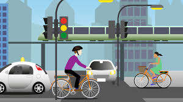

TIPOS AUTOMATIZACIONES DISPONIBLES
Automatización que permite optimizar las planeaciones en las visitas que se deben realizar apartir de un formulario y la clasificación del mismo, definiendo la prioridad segun corresponda el triage.

AUTOMATIZACION DE MOVILIDAD
Automatización que permite reducir el número de siniestralidad identificando factores de riesgo apartir de formularios que consoliden la información para identificar patrones .